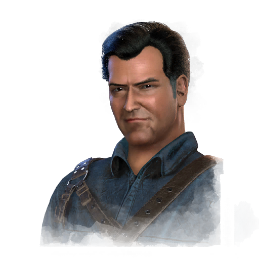

阿什莉·J·威廉姆斯 Ashley J. Williams
- 性别
- Man
- 出身
- 美国人
- 演员
- Bruce Campbell (Original Actor)
背景故事
周末与朋友们在林间木屋度假时，阿什·威廉姆斯翻开了《死灵书·亡者之书》，惊醒了潜伏在 woods深处的黑暗存在。邪恶附上了他朋友的身体，他被迫亲手将他们杀死；也被附身的还有他的右臂，他只能将其锯断。此后的三十年里，阿什一直在逃避自己的过去：在一家 Value Stop 百货公司打工，在廉价酒吧里勾搭女人。直到某个夜晚，他在嗑high的状态下为向一个女人炫耀而朗读了《死灵书》中的咒文。邪恶再一次找上了他，毁掉了身边人的生活。但他的同事们挺身而出——被萨满抚养长大的巴布罗，以及因尸民而失去父母的凯莉——帮助他奋起反抗。在与邪恶的搏斗中，阿什与失散多年的女儿布兰迪重逢，是她促使他接受自己身为人类救世主的使命。在与彻底成形的恶魔经历一场惨烈的战斗后，阿什在最后一口气中，被苏美尔骑士团接引，传送到了未来。
阿什从一个声音中醒来，头痛欲裂。自从一周前击溃了一群尸民之后，他便一直处于一种永远醒不过来的宿醉状态。他再次听见那个声音——一个女人在歌唱， sensual 而充满召唤。他穿着四角内裤走进走廊，循着声音前行，那声音把他引向了公共更衣室。当阿什推开门的瞬间，歌声停止了。窗帘后传来窸窣的响动。他出声呼唤着，走进换衣间。他的声音在发霉的瓷砖墙间回荡。他继续向前，来到一处仍在滴水的淋浴间前。
专属技能
通用技能 任意逃生者均可使用
寻宝专家
Artefact Hunter
执念之缚
Bound by Obsession
黑暗感知
Dark Sense
坚持到底
Down to the Last
似曾相识
Déjà Vu
希望
Hope
同族
Kindred
最后站立
Last Standing
轻装上阵
Lightweight
不抛弃任何人
No One Left Behind
过度自信
Overconfidence
掠夺者直觉
Plunderer's Instinct
预兆
Premonition
韧性
Resilience
滑溜之躯
Slippery Meat
小猎手
Small Game
背脊发凉
Spine Chill
这不是真的
This Is Not Happening
硬跑者
Tough Runner
我们能行
We'll Make It
求生意志
Will to Live
附加品
- 暂无数据。